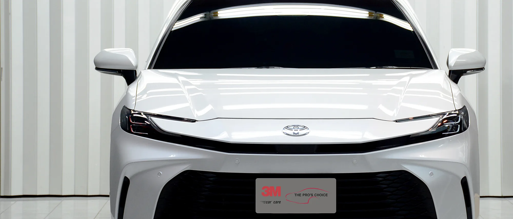
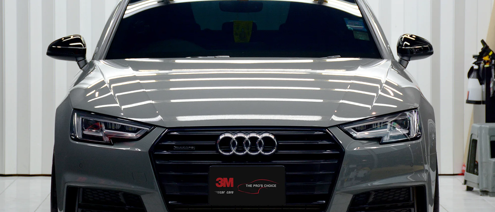
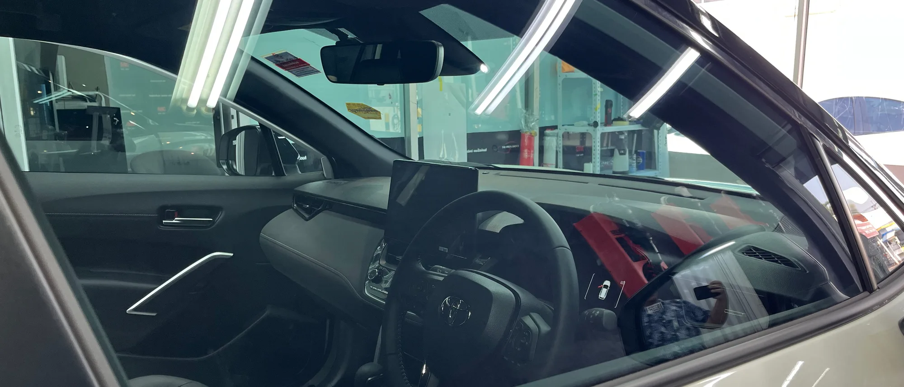
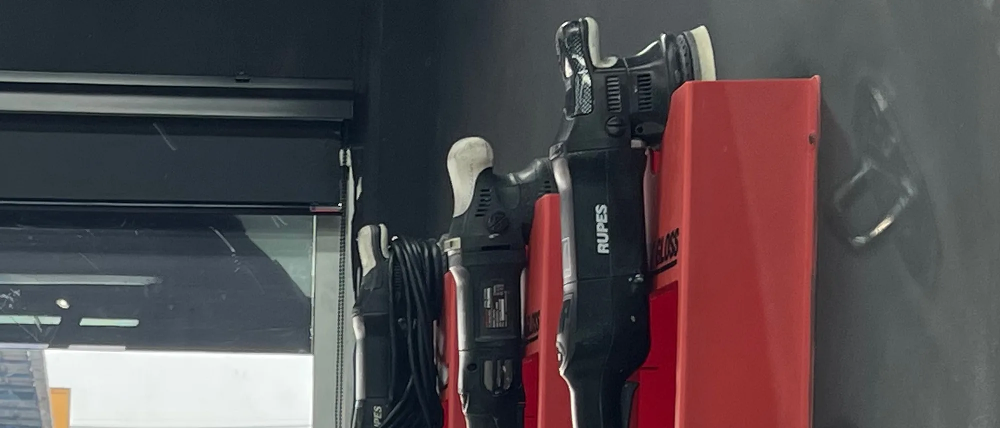

Window Film
รถร้อน ขับไม่สบาย?
ฟิล์มกรองแสงช่วยลดความร้อนและแสงสะท้อน ทำให้การขับขี่สบายขึ้นในทุกวัน
ดูฟิล์มกรองแสงจุดเริ่มต้นของคุณ
เริ่มจากสิ่งที่รถของคุณกำลังเจอ แล้วค่อยเลือกแนวทางดูแลที่เหมาะสม ไม่จำเป็นต้องรู้จักชื่อบริการมาก่อน เราจะช่วยแนะนำให้ตรงกับการใช้งานจริง
Window Film
ฟิล์มกรองแสงช่วยลดความร้อนและแสงสะท้อน ทำให้การขับขี่สบายขึ้นในทุกวัน
ดูฟิล์มกรองแสง
Paint Protection Film
ปกป้องผิวสีตั้งแต่วันแรก ด้วยฟิล์มใสกันรอย เพื่อลดความเสี่ยงจากหินดีดและรอยขีดข่วนระหว่างการใช้งาน
ดูฟิล์มใสกันรอย
Surface Refinement
ฟื้นฟูผิวสีให้กลับมาเรียบเนียน ก่อนเข้าสู่การดูแลหรือการปกป้องในขั้นต่อไป
ดูบริการขัดสี
Ceramic Coating
เคลือบเซรามิกช่วยให้ล้างง่าย ลดการเกาะของคราบ และช่วยรักษาสภาพรถในระยะยาว
ดูบริการเคลือบเซรามิกมาตรฐานที่คุณวางใจได้
คุณมั่นใจได้ว่างานติดตั้งเป็นไปตามมาตรฐานของ 3M ทุกขั้นตอน
คุณได้รับการดูแลจากทีมที่ผ่านงานใช้งานจริงมาต่อเนื่อง
รถของคุณได้รับการดูแลในห้องที่ออกแบบมาเฉพาะงานติดตั้ง แสงสว่างเพียงพอ และมีระบบปรับอากาศ
คุณได้รับการรับประกันตามมาตรฐานของผลิตภัณฑ์และโปรแกรมที่เลือก
Car Care พื้นฐานที่ทำให้ลูกค้ากลับมา
ก่อนจะไปถึงการปกป้องระยะยาว รถทุกคันต้องเริ่มจากการดูแลพื้นฐานที่ถูกต้อง Car Care คือบริการหลักที่ลูกค้ากลับมาใช้ซ้ำบ่อยที่สุด ตั้งแต่ล้างรถ ขัดเคลือบสี ดูแลภายใน ไปจนถึงการเตรียมพื้นผิว เพื่อให้รถดูดี ใช้งานง่าย และพร้อมต่อยอดสู่ระบบปกป้องที่เหมาะสมในอนาคต

ล้างรถอย่างถูกวิธี ลดความเสี่ยงรอยขนแมว และดูแลรถให้สะอาดสม่ำเสมอ

ขัดเคลือบสีและดูแลผิวรถสำหรับลูกค้าที่ต้องการให้รถเงา ดูดี และดูแลง่ายขึ้น

ดูแลภายใน กระจก และรายละเอียดที่ส่งผลต่อความสบายในการใช้งานจริง

เตรียมพื้นผิวก่อนงานเคลือบ ฟิล์มใสกันรอย หรือโปรแกรมปกป้องระยะยาว
ระบบปกป้องรถของคุณในระยะยาว
เมื่อพื้นฐานของรถพร้อมแล้ว ขั้นถัดไปคือการวางระบบปกป้องระยะยาว ให้เหมาะกับการใช้งานจริงของรถคุณโดยเฉพาะ

3M Crystalline และ Ceramic IR Series เหมาะกับคุณที่ต้องการทั้งความสบายและความชัดเจนในการมองเห็น

ระบบปกป้องผิวสีจากแรงกระแทกและรอยจากการใช้งาน เหมาะกับคุณที่ต้องการปกป้องรถให้มากกว่าเดิม

ระบบดูแลผิวสีที่ช่วยให้คุณล้างง่าย ดูแลง่าย และรักษาภาพรวมของรถในระยะยาว

ฟื้นฟูผิวรถของคุณก่อนเข้าสู่การปกป้อง เพื่อให้ขั้นตอนถัดไปทำงานบนผิวที่พร้อมจริง
ขั้นตอนที่คุณจะได้พบ
ดูสภาพรถจริงของคุณและทำความเข้าใจเป้าหมายที่คุณต้องการ ก่อนเลือกแนวทางที่เหมาะสม
เลือกบริการและระดับโปรแกรมที่ตรงกับการใช้งาน งบประมาณ และผลลัพธ์ที่คุณต้องการ
ล้าง ทำความสะอาด และปรับสภาพพื้นผิวตามมาตรฐานของงานแต่ละประเภท
ดำเนินงานตามขั้นตอนของผลิตภัณฑ์และระบบที่เลือก โดยคุมความสม่ำเสมอของงานทุกคัน
ตรวจสอบความเรียบร้อย พร้อมอธิบายแนวทางการดูแลให้คุณเข้าใจชัดเจน
ผลงานล่าสุด

งานติดตั้งสำหรับรถใช้งานจริงที่ต้องการทั้งความสบายและภาพลักษณ์ที่นิ่งสะอาด

งานปกป้องจุดเสี่ยงและพื้นผิวหลักของรถ เพื่อรองรับการใช้งานระยะยาว

งานดูแลผิวสีที่เน้นความเรียบร้อย ความลื่น และความง่ายในการดูแลต่อ
ให้บริการดูแลและปกป้องรถมาแล้วกว่า 13 ปี ตั้งแต่ปี 2013
งบประมาณเบื้องต้น
เมื่อคุณเห็นระดับงบประมาณตั้งแต่ต้น คุณจะตัดสินใจได้ง่ายขึ้น และเลือกบริการได้ตรงกับความต้องการจริง
เริ่มต้นประมาณ 7,000 – 25,000+ บาท ขึ้นอยู่กับรุ่นฟิล์มและประเภทของรถ
เริ่มต้นประมาณ 5,900 – 23,900 บาท ขึ้นอยู่กับระดับโปรแกรม (Deluxe / Premier) และขนาดรถ
เริ่มต้นตามขอบเขตการติดตั้ง ตั้งแต่จุดเสี่ยงเฉพาะตำแหน่ง ไปจนถึงรอบคัน
เริ่มต้นประมาณ 1,100 – 10,000+ บาท ขึ้นอยู่กับระดับการขัดและขนาดรถ
เริ่มต้นประมาณ 180 บาท ต่อครั้ง หรือแพ็กเกจ 12 ครั้งเริ่มต้น 2,200 บาท
ราคาจริงของรถคุณขึ้นอยู่กับรุ่นรถ ขนาดรถ สภาพพื้นผิว และขอบเขตของโปรแกรมที่เลือก
เริ่มต้นจากการประเมินที่ถูกต้อง
แจ้งรุ่นรถ อายุการใช้งาน และสิ่งที่คุณต้องการกับเราได้ เราจะช่วยแนะนำโปรแกรมที่เหมาะกับรถของคุณอย่างตรงไปตรงมา
ปรึกษา / นัดหมาย